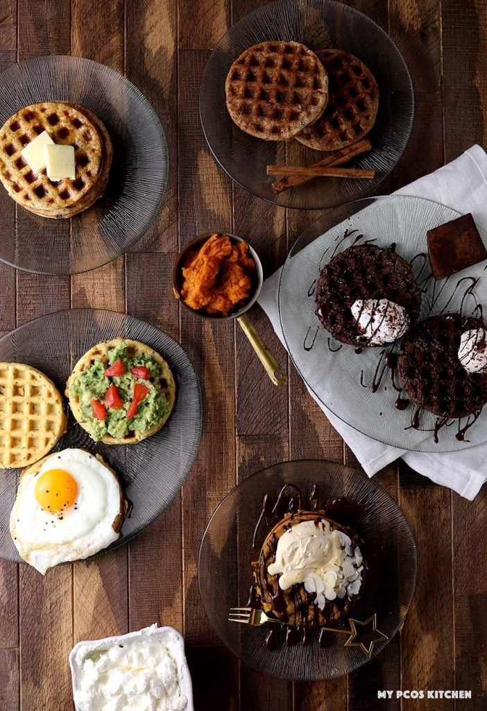

Why is a diet so important for women with PCOS?
- Women with PCOS often have higher levels of insulin that may make it harder for them to maintain a healthy weight
- Eating well is a big factor that can help improve the symptoms of PCOS
- The insulin level in the blood goes up after this person with PCOS eats. However, it goes up even more if the food or drink that was consumed has carbohydrates
What to look for when planning a diet!
- Always read the Nutrition Facts Label
- Be mindful of serving sizes and portions
What are the foods that you should eat when diagnosed with PCOS?
- Whole Grains:
- Whole wheat pasta
- Brown rice
- Oats
- Whole wheat Bread
- Fruits:
- Apples
- Berries:
- Blueberries
- Strawberries
- Raspberries
- Grapes
- Oranges
- Peaches
- Plums
- Vegetables:
- Asparagus
- Broccoli
- Carrots
- Cauliflower
- Celery
- Cucumber
- Green beans
- Spinach
- Tomatoes
- Zucchini
- Green and Red peppers
- Sweet potatoes
- Winter squash
- Kale
- Lean Protein:
- Fish
- Chicken
- Tofu
- Peas
- Beans
- Poultry
- Healthy Fats:
- Salmon
- Sardines
- Drinks:
- Water
- Unsweet Iced Tea
- Snacks:
- Crackers:
- Triscuits
- Wasa
- Popcorn
- Almonds
- Walnuts
- Crackers:
- Cereal:
- High fiber cereals:
- Kashi
- Shredded Wheat
- High fiber cereals:
PCOS Friendly Recipes to Try at Home!

Try these Dairy Free Keto Low Carb Waffles! Click the image to go check out the recipe!
Try these Gluten Free Pigs in a Blanket! Click the image to go check out the recipe!
Try these Gluten Free Low Carb Keto Fish Tacos! Click the image to go check out the recipe!
 @ovarlooked
@ovarlooked  @ovarLooked
@ovarLooked